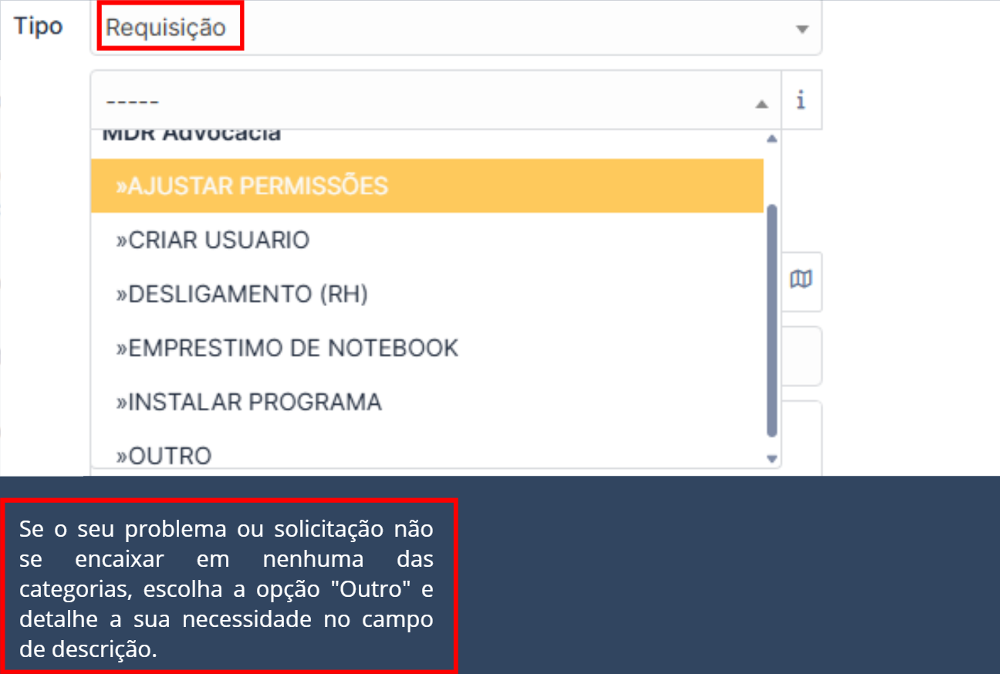

Passo 1: Acesse o site MDR Advocacia
Abra seu navegador no site mdradvocacia.com na barra de busca (ou clique no link fornecido). Você será direcionado para a página inicial, conforme a imagem abaixo: Passe o cursor na aba interno.
Passo 2: Vá para aba "Interno" e depois clique em "GLPI"
Na próxima tela, você verá a página interna com diversas opções. Encontre a seção "Outros Links" e clique em "GLPI". O login e senha do usuário é o mesmo do seu pc.
Passo 3: Clique em "Criar um chamado"
Ao entrar no GLPI, você verá a tela inicial. Para iniciar um novo chamado, você tem duas opções para clicar em "Criar um chamado":
- Opção 1: No menu lateral esquerdo, logo abaixo de "Home".
- Opção 2: No painel central, acima da lista de "Chamados".
Passo 4: Escolha o Tipo de Chamado e a Categoria
Você pode escolher entre dois tipos de chamado, Incidente ou Requisição, e cada um tem categorias específicas para ajudar a direcionar sua solicitação.
Passo 4.1: Tipo "Requisição"
Escolha esta opção para fazer uma solicitação, ou seja, pedir algo que você precisa. Ao selecionar "Requisição", as seguintes categorias estarão disponíveis.
Passo 5: Inclua o número do seu PC
No campo "Elementos associados", clique no botão com um + (sinal de mais). O número geralmente segue o padrão MDR-PCXXX. Você pode encontrar o número verificando a etiqueta de patrimônio na sua máquina ou no papel de parede do seu computador.
Passo 6: Selecione sua localização e setor
No campo "Localização", clique para abrir a lista de opções. Primeiro, escolha se você está no escritório "Manhattan" ou na "Matriz CM". Em seguida, selecione seu setor para que a equipe de Ti saiba onde encontrar você.
Passo 7: Preencha o Título e a Descrição
Seja objetivo e claro no "Título", por exemplo: "PC DESLIGANDO/SEM REDE". Na "Descrição", detalhe o problema o máximo que puder, pois quanto mais detalhes, mais rápido o problema será resolvido. Você pode anexar uma imagem ou documento clicando em "Escolher arquivos" ou arrastando o arquivo.
Passo 8: Acompanhe o andamento
Passo 1: Acesse a lista de chamados
Na tela principal do GLPI, clique no menu "Chamados" para ver a lista de todas as solicitações que você já abriu. Nessa tela, você pode visualizar todos os seus chamados e o status de cada um: Novo, Em atendimento, Solucionado, Fechado.
Passo 2: Converse com o técnico e acompanhe o andamento
Para ver os detalhes de um chamado e conversar com o técnico, basta clicar no "Título" ou no "ID" do chamado na lista. No painel "Requerente", você verá seu próprio nome. No painel "Atribuído", você verá o nome do técnico responsável por sua solicitação.

Para enviar uma mensagem ou responder a alguma pergunta do técnico, clique no botão "Responder" no canto inferior esquerdo da tela do chamado.